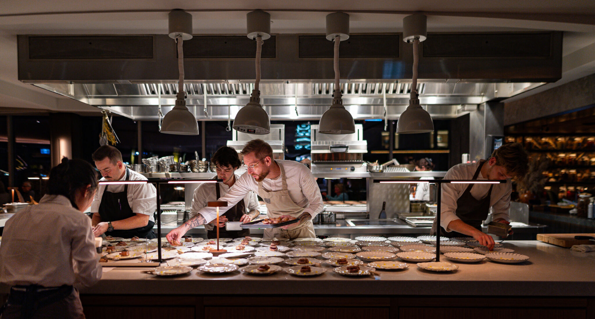

Cuisine: Contemporary / Fusion
Website: mystichalifax.ca
Summary
Mystic offers a creative menu with bold flavor profiles and inventive cocktails. The dining room feels lively and modern — a good pick for groups looking for dynamic dishes and drinks.
Contact
Website: mystichalifax.ca
Guest Reviews
Kai —
Inventive menu with bold flavors. Cocktails were outstanding.
Rowan —
Interesting dishes but a few felt over-seasoned for my taste.
Morgan —
Lively spot with great shareable plates. Would return for cocktails and snacks.